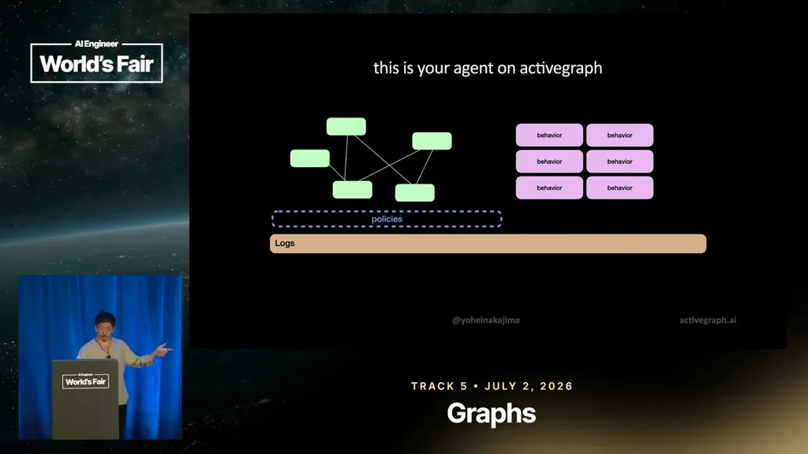
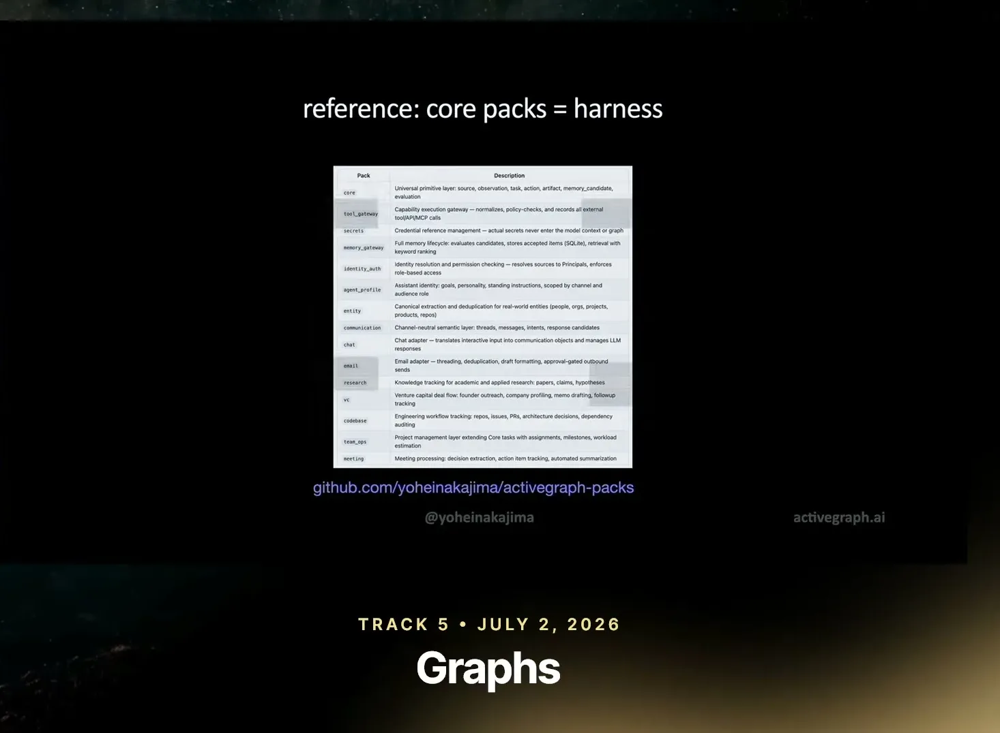
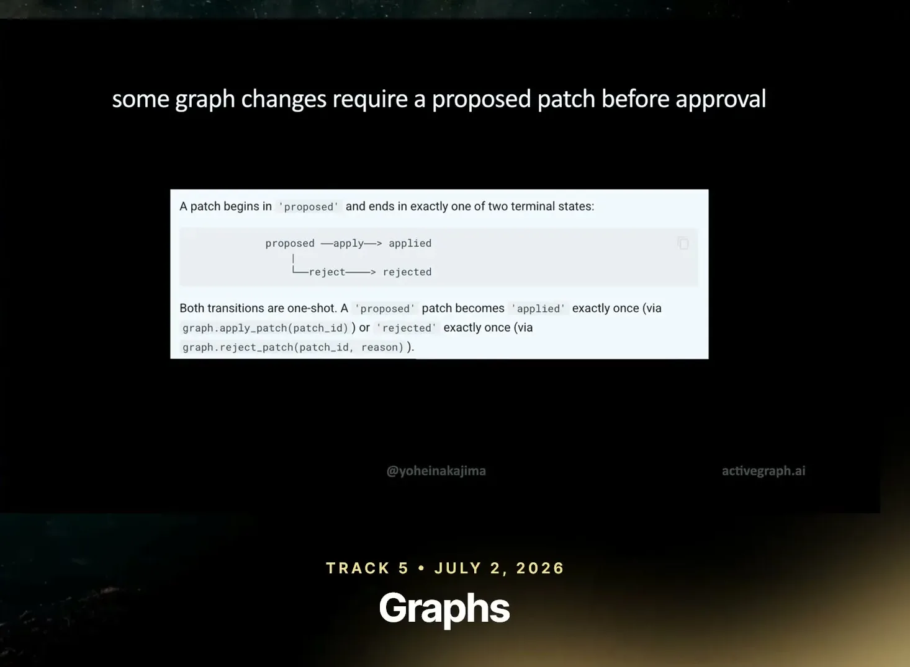
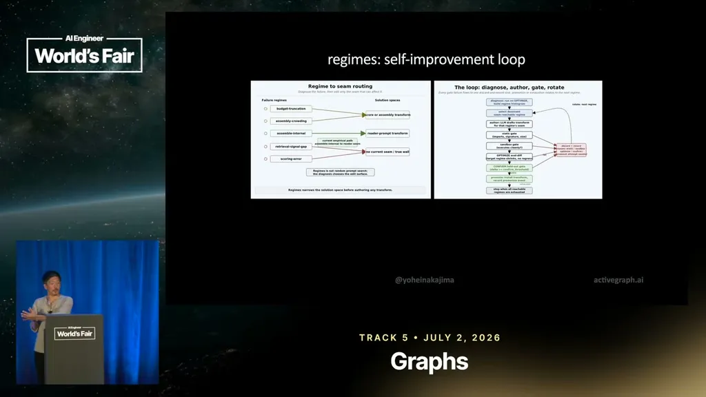
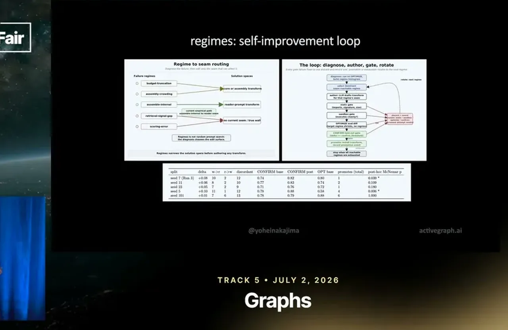
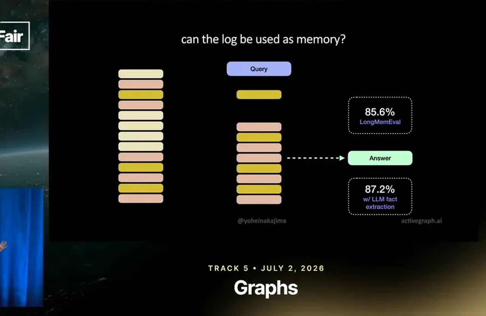
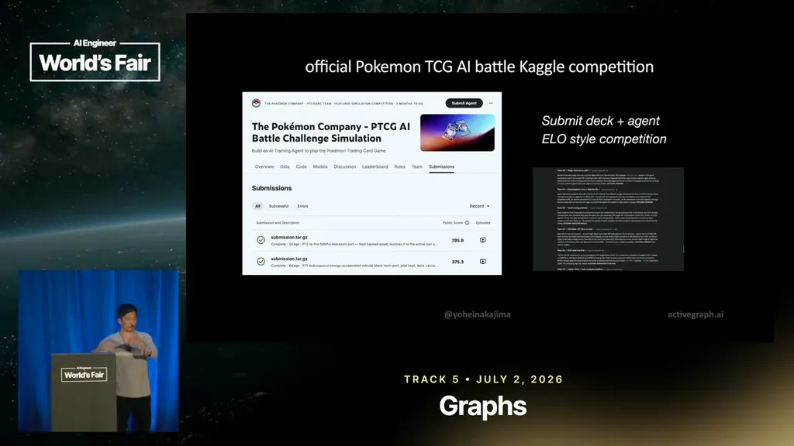

Active Graph Agent Runtime (BabyAGI 4)
BabyAGI 4 ActiveGraph is an event-sourced graph runtime with a shared immutable log, policy-gated self-modification loop, and blackboard-style multi-worker coordination, tested on long-mem-eval and a Pokemon competition.
If you only read one thing
- ActiveGraph is an event-sourced graph runtime where LLMs never talk to each other directly; they all read and write a shared immutable event log, and behaviors react to graph changes rather than to messages (c2, c3).
- A policy-gated self-modification loop (propose a patch, gate-check, test, accept only on measured improvement) produced statistically significant gains on long-mem-eval and raised win rate across ~80 tuning passes on a Pokemon-deck competition (c4, c6, c7, c8)
- Nakajima's working hypothesis is that blackboard/Kafka-style multi-worker coordination through shared state outperforms pure LLM-centric harnesses because decades of training data exist on that pattern, unlike the ~3-year-old LLM-agent pattern (c9)
This traces how ActiveGraph's packs, event log, and policy gate connect to the diagnose/author/gate self-modification loop and the two test cases Nakajima described; the talk does not fully specify the gate check's internals (ours).
Why this talk is a blueprint, not a take (ours)
Scope: A general-purpose agent runtime and pack library (ActiveGraph) for builders assembling auditable, replayable agents, not a specific vertical product.
An event-sourced graph runtime where every agent state change is an immutable log entry, plus a set of prebuilt packs (core, tool gateway, secrets, memory gateway, identity/auth, entity, communication, chat, email, research, VC, codebase, meeting) that supply object types and behaviors so a new agent is assembled by attaching packs rather than writing a bespoke harness. A policy gate and a diagnose/author/gate/rotate loop let the agent propose and test changes to itself, accepting only measured improvements.
Prerequisites the talk implies:
- Willingness to model agent state as a graph of typed objects and events rather than a message history
- A store for an append-only event log per agent (the packs table lists SQLite as one option)
- A held-out eval set (Nakajima used LongMemEval and a Pokemon Kaggle competition) to gate self-modification patches on measured accuracy rather than LLM judgment alone
What the talk does not say:
- No cost, latency, or infrastructure figures for running the event log, packs, or the gate-check loop
- No comparison against an ungated self-modification baseline, so how much of the gain comes from the log architecture versus simply having a strict accept/reject gate is unclear
- No team size, timeline, or production-deployment detail beyond Nakajima's own solo experiments and reference agents (coding agent, research agent, lab, Pokemon bot)
If you were to replicate one thing first: Start by logging every state change your agent already makes into a single append-only event log, before adding packs or a self-modification loop on top of it.
| Component | What it does (from the talk) | Evidence | Slide |
|---|---|---|---|
| LLMs & behaviors | Read and write the shared event log; never message each other directly, reacting to graph changes instead | c2 · 01:35 |  |
| Immutable event log | Flattens every change (what the agent does and how it changes) into a single append-only log used as ground truth | c3 · 02:45 | |
| ActiveGraph packs | Bundle object types and behaviors (core, tool gateway, secrets, memory gateway, identity/auth, entity, communication, chat, email, research, VC, codebase, meeting) attached together to build an agent | c11 · 10:18 |  |
| Policy gate | Requires some graph changes to go through a proposed patch before approval; a patch ends in exactly one terminal state, applied or rejected | c4 · 06:25 |  |
| Regimes self-mod loop | Diagnoses a failure regime, authors a patch by forking the agent, gate-checks it (static and sandbox), then rotates to the next regime | c12 · 11:51 |  |
| Patch accept/reject | Accepts a patch only if it measurably improved accuracy; typically accepted 4-5 of 8-13 proposed patches per loop | c7 · 12:05 |  |
| Log-as-memory test | Answers LongMemEval questions by embedding the query against the existing event log, no separate vector RAG or fact/entity extraction | c5 · 08:50 |  |
| Pokemon deck tuning | Iterates a deterministic Pokemon trading-card-deck bot in an Elo-style Kaggle competition using the same propose/gate/accept loop | c8 · 14:05 |  |
Building around the log instead of the LLM
- Nakajima frames most current agent-building as LLM-centric: start with the LLM, add tools, memory, and logging on top.
- ActiveGraph inverts this, treating every change to the agent (not just what it does) as a single immutable event log that projects the agent's current state as a graph.
- LLMs and deterministic behaviors never communicate directly with each other; they all read and write through this shared state.
- Agents are assembled from prebuilt packs (core, tool, secret, memory, identity, communication, chat, among others shown on slides), each bundling object types and behaviors, attached together like a harness.
“ActiveGraph is an event-sourced graph runtime for building auditable agents.”
said at 01:35“let's flatten that down into a single immutable event log, and this is the ground truth of the agent.”
said at 02:45“core pack, a tool pack, a secret pack, a memory pack, an identity pack, a communication pack, a chat pack”
said at 10:18Policies gate what the agent can change about itself
- ActiveGraph adds a policy layer that determines what kinds of graph changes are allowed automatically versus requiring a proposed patch before approval; a patch begins in a 'proposed' state and ends in exactly one of two terminal states, applied or rejected.
- In a self-modification experiment called Regimes, the agent classified its own failures into regimes, proposed a targeted patch by forking itself, ran a static gate check and a sandbox gate check, tested the patch, and only accepted it if accuracy measurably improved.
- Across these loops it typically proposed 8-13 patches per run but accepted only 4-5.
“some graph changes require a proposed patch before approval”
said at 06:25“it would loop like eight or 13 times, but only accept four or five of those patches”
said at 11:55“it actually did have, you know, modest, but like statistically significant improvement on long mem eval scores.”
said at 12:05“the agent forking itself, proposing a change, doing a static gate check, a sandbox gate check, and then making sure it actually impacted the result”
said at 11:51Two test cases: long-mem-eval and a Pokemon deck bot
- Nakajima tested using the event log itself as agent memory (no vector RAG, no fact/entity extraction, just embedding the query against logged messages) and reported it performed well on long-mem-eval.
- Separately, he used ActiveGraph to iterate a deterministic Pokemon trading-card-deck bot competing in an Elo-style Kaggle competition, running roughly 80 tuning passes, accepting about 20-30 of them, with score improving slowly over that process.
“did pretty well on long mem eval, right? Like a lot of the data in your memory is actually overlaps with the memory uh the data in your log.”
said at 08:50“out of those 80 passes, it probably accepted about 20 to 30 and the score did slowly improve.”
said at 14:05Why this pattern might work better than pure LLM harnesses
- Nakajima's hypothesis is that blackboard architecture (1970s-80s) and Kafka-style shared-state, multi-worker coordination have decades of prior discussion and examples in the training data, whereas LLM-based agent design is only about three years old.
“there's decades of conversations about how to make that work better. And my hypothesis is that that's in the training data.”
said at 15:05Commentary (ours)
The self-modification results (accepting 4-5 of 8-13 proposed patches, or 20-30 of 80 Pokemon-deck tuning passes) are framed by Nakajima himself as modest and early; there's no baseline comparison against an ungated self-modification loop, so it's unclear how much of the gain comes from the log architecture versus simply having a strict accept/reject gate at all (ours).

Underlying detail — every claim, typed and timestamped (10)
| Stance | Claim | t |
|---|---|---|
| asserts | ActiveGraph is defined as an event-sourced graph runtime for building auditable agents. | 01:35 |
| asserts | ActiveGraph flattens what the agent does and how it changes into a single immutable event log that serves as the agent's ground truth. | 02:45 |
| recommends | Some graph changes should require a proposed patch to go through approval before being applied. | 06:25 |
| asserts | Using the structured event log itself (embedding the query, retrieving surrounding logged messages) performed well on long-mem-eval without semantic ingestion or entity extraction. | 08:50 |
| asserts | In the Regimes self-modification experiment, each loop proposed 8-13 patches but only accepted 4-5 of them. | 11:55 |
| asserts | The accepted self-modification patches produced a modest but statistically significant improvement on long-mem-eval scores. | 12:05 |
| asserts | Across roughly 80 tuning passes on a Pokemon-deck competition, about 20-30 were accepted and the score improved slowly. | 14:05 |
| predicts | Nakajima hypothesizes that blackboard/Kafka-style shared-state coordination works better for agents than pure LLM harnesses because decades of prior discussion of that pattern exist in the training data. | 15:05 |
| asserts | ActiveGraph agents are assembled from packs (core, tool, secret, memory, identity, communication, chat), each bundling object types and behaviors, attached together to build an agent. | 10:18 |
| asserts | A self-modification patch works by the agent forking itself, proposing a change, running a static gate check and a sandbox gate check, then confirming measured impact before accepting. | 11:51 |
Machine-readable copy embedded in this page (script#ontology) and in the corpus ontology.